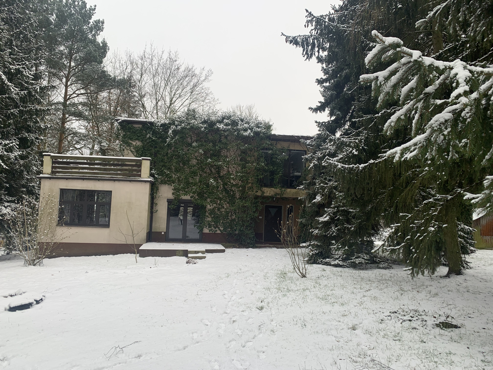

Znajdujemy się prawie w centrum Polski, niedaleko Warszawy (35-40 min.) około 60 kilometrów, tuż przy trasie E7 – Warszawa-Kraków. Nasza lokalizacja blisko rzeki Pilicy, a także okolicznych lasów jest idealnym miejscem, aby odpocząć od miejskiego zgiełku.
Oferujemy Państwu komfortowy odpoczynek w pięknym i wyremontowanym domu z lat 30, który posiada swoją duszę. Znajduje się tam 7 miejsc noclegowych, dwie łazienki i kuchnia. W środku domu zachowane są stare akcenty co sprawia że jest przytulny a zarazem komfortowy do tego położony jest w środku parku liściasto-iglastego.

Dom wyposażony jest we wszystkie potrzebne sprzęty i akcesoria (w tym naczynia, zmywarkę, pralkę, czajnik itp.), a także w ręczniki i przybory toaletowe oraz kawę i herbatę.